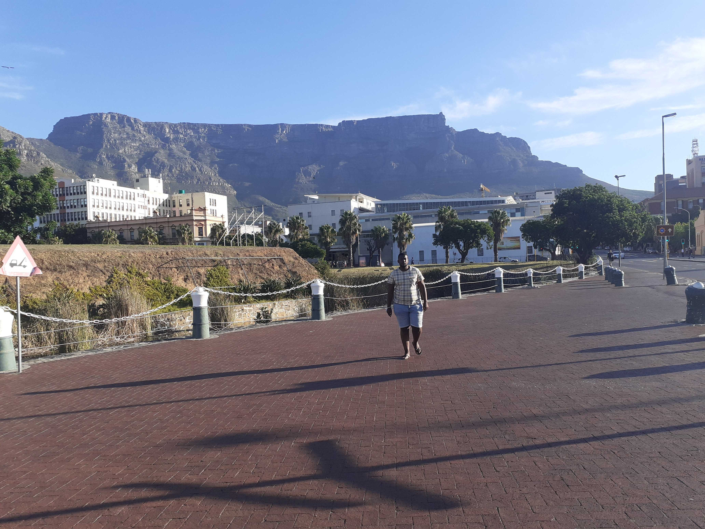

Siyabonga Mpani

Aboriginal Australians were multicultural long before European settlers came to Australia. Traditionally, there were more than 500 different Aboriginal Nations across Australia with different languages, social structures and modes of behaviour, but also with many common denominators – specifically religious ties and Kinship systems.
Second only to English, French is among the top languages for the number of countries where it has official status. It is also the only language, alongside English, that is taught in every country in the world.
| ENGLISH | FRENCH |
|---|---|
| Hello | Bonjour |
| GoodBye | au revoir |
| Thank you | merci |
Iziko Museum of South Africa operates the premier public art and cultural destinations in Cape Town. This flagship heritage institution, manages 11 national museums; collection-specific libraries; a world-class Social History Archive and the most advanced digital Planetarium and Digital Dome on the African Continent.
District Six Museum is a museum in the former inner-city residential area and, District Six, in Cape Town, South Africa in an old Methodist church. District Six Foundation was founded in 1989 and the museum in 1994, as a memorial to the forced movement of 60,000 inhabitants of various races in District Six during Apartheid in South Africa in the 1970s
A Cape Town landmark, the Castle of Good Hope, is a prime example of a “star fort”. Built between 1666 and 1679 by the Dutch East India Company, it’s the oldest existing colonial building in South Africa. Its position marks the original shoreline before years of land reclamation changed the Table Bay coastline.